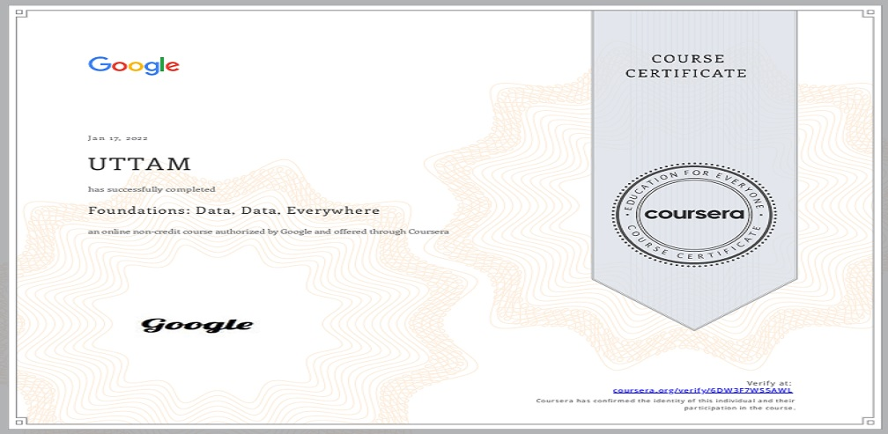

Foundations: Data, Data, Everywhere

Define and explain key concepts involved in data analytics including data, data analysis, and data ecosystem.
Conduct an analytical thinking self assessment giving specific examples of the application of analytical thinking.
Discuss the role of spreadsheets, query languages, and data visualization tools in data analytics.
Describe the role of a data analyst with specific reference to jobs/positions.